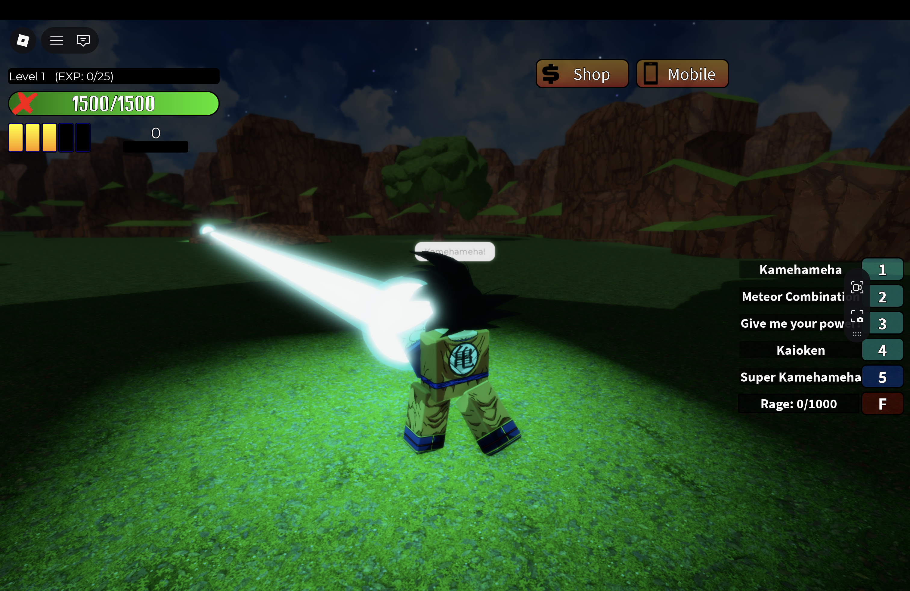
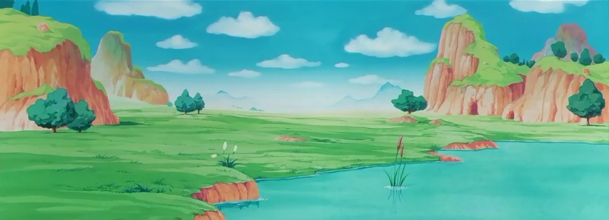
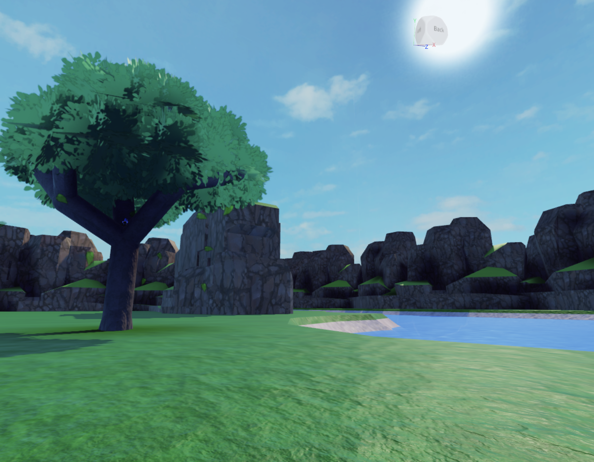

Dragon Ball Rage Rebirth 2 - 2021
Level Design - Prop Art
Jeu vidéo de combat basé sur l'univers du manga Dragon Ball réalisé sur la plateforme de jeux-vidéo en ligne Roblox avec une petite équipe.
Présentation
Au cours de l'année 2021 alors que je débutais en tant que développeur sur Roblox j'ai intégré l'équipe de développement de Dragon Ball Rage Rebirth 2 en tant que level designer.
Dragon Ball Rage Rebirth 2 est un jeu de combat basé sur l'univers du manga Dragon Ball et toutes ses dérives. Le joueur sélectionne un personnage quand il rejoint le jeu et est lancé sur une arène où il peut se battre avec d'autres joueurs.
Vaincre des adversaires lui permet de gagner de l'expérience de joueur qui permettent à ce dernier de débloquer de nouveaux personnages.

Contribution
Plutôt qu'un groupe de plusieurs développeurs, l'équipe de développement du jeu consistait surtout du créateur principal et de plusieurs contributeurs temporaires ayant chacun un rôle respectif.
En tant que level designer, j'ai donc réalisé une arène représentant une terre dévastée végétale pour le jeu.
J'ai réalisé cette arène principalement sur Roblox Studio mais j'ai aussi utilisé Blender dans le cadre de la création de props pour la première fois.
Ce projet consistait donc à ma première véritable expérience en tant que développeur sur Roblox et m'a permis de me représenter à quoi ressemble le train de vie d'un développeur de jeu dans une petite équipe.
J'ai beaucoup apprécié cette expérience et elle m'a convaincu dans l'idée de poursuivre dans le domaine du jeu-vidéo.

